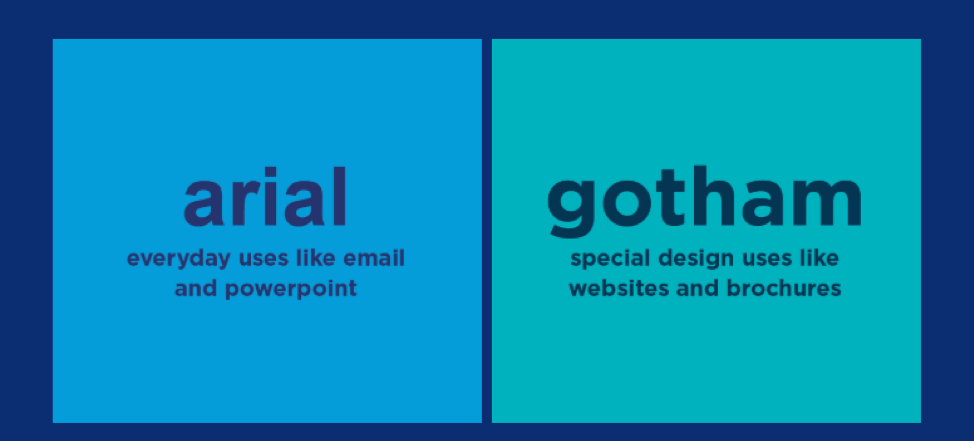
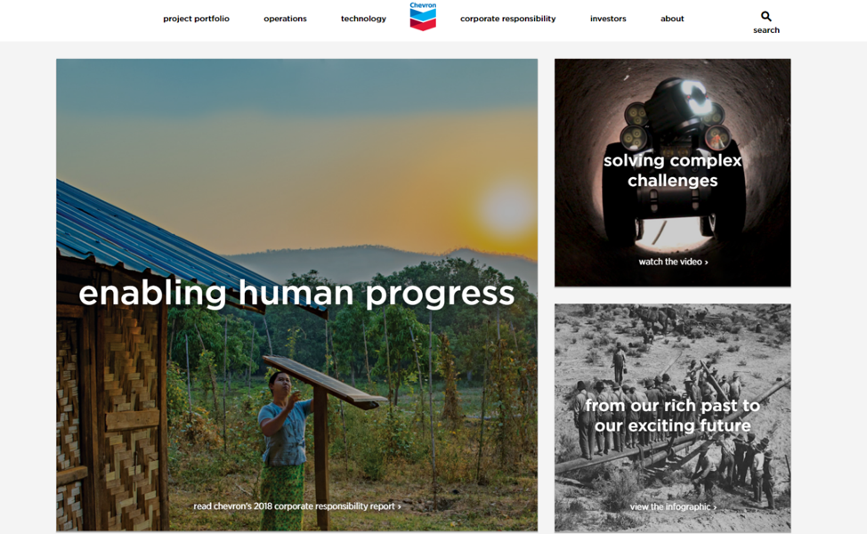

Chevron: Building a tool employees could depend on
When I joined Chevron, the IT department was in the middle of a move to cloud tools. Longtime employees were adjusting to new systems, and the application they used to track performance metrics had some frustrating problems: comments disappeared, records had no timestamps, and there wasn’t a clear way to tell who had changed what. My summer project was to build a better way to manage those records using Microsoft PowerApps.
As the sole developer on the application, I worked with full-time Chevron employees across four Agile sprints, gathering feedback as I built and bringing it into the next round of changes.

Typography reference parameters & design specs

Application Homepage Environment Layout